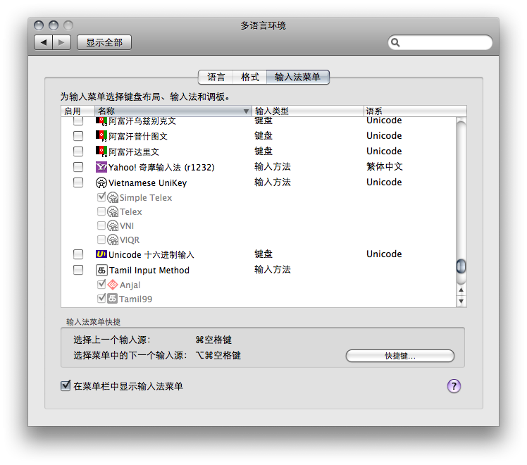

恭喜！您已经成功安装了 Yahoo! 奇摩输入法！
接下来，因为 Mac OS X 的系统设计，您需要先登出系统，再重新登入，才能够开始使用新安装的输入法。而在重新登入之后，请根据以下步骤操作，将 Yahoo! 奇摩输入法加入到您的输入法菜单中。
请您打开“系统偏好设置”中的“多语言环境”。您可以从萤幕上方菜单列的最左方，点选苹果图示，从菜单中叫出“系统偏好设置”，在“系统偏好设置”第一列的图示中，便可以找到“多语言环境”。在“多语言环境”中，请切换到第三个分页“输入法菜单”。
在“输入法菜单”分页的列表中，可以看到所有 Mac OS X 可用的各种语言键盘配置以及输入法。请在列表中寻找“Yahoo! 奇摩输入法”这个条目，在前方的方块中打勾。
之后，您便可以在萤幕上方的菜单列右上方，在系统输入法菜单中，看到“Yahoo! 奇摩输入法”了。您可以在输入法菜单中，也可以用 cmd+space 快速键，在“Yahoo! 奇摩输入法”与其他键盘配置或输入法之间切换。